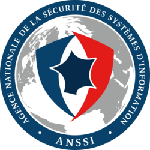
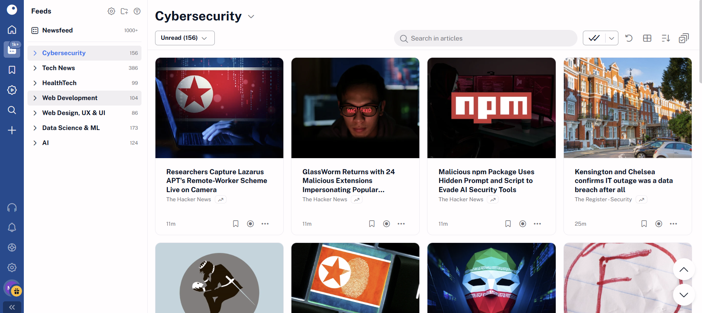

- Étudiant orienté systèmes, réseaux et infrastructures IT
- Appétence forte pour l'administration Windows Server et Active Directory
- Expérience concrète en support utilisateurs, déploiement et maintenance
Présentation
Eliès ASKRI
Étudiant en BTS SIO, option SISR • Administration systèmes et réseaux • Support IT • Cybersécurité
- Mon niveau technique en systèmes et réseaux
- Mes projets académiques, professionnels et personnels
- Mes situations E6, mes documents BTS et mes expériences terrain
Accès rapide
Accédez directement aux éléments les plus utiles pour la lecture du portfolio.
BTS SIO - Option SISR
- Déploiement et administration de serveurs
- Configuration d'infrastructures réseaux
- Virtualisation et services d'annuaire
- Sauvegarde, supervision et sécurisation
- Compétences réseaux
- Compétences systèmes
- Support technique
- Documentation technique
- TP d'infrastructure et projets encadrés
- Stage et alternance en environnement réel
- Situations professionnelles E6
- Veille technologique et tableau de synthèse
- Administrateur systèmes et réseaux junior
- Technicien support ou technicien systèmes
- Technicien infrastructure / proximité
- Évolution vers la cybersécurité et le cloud
Dashboard
- Pôle réseaux et pôle systèmes
- AD, GPO, virtualisation et sauvegarde
- Certifications et outils techniques
- Projet académique d'infrastructure
- Expériences concrètes en entreprise
- Homelab personnel en progression
- Deux environnements professionnels distincts
- Support, déploiement et administration
- Active Directory et accompagnement utilisateurs
- Réalisation 1 : routage inter-VLAN
- Réalisation 2 : Active Directory
- Schémas et fiches E6 disponibles
- Cybersécurité et incidents majeurs
- Fuites de données et data breach
- Flux RSS spécialisés et veille continue
Compétences
- VLAN et segmentation logique du réseau
- Routage, routage inter-VLAN et configuration des routeurs
- Configuration Cisco, switching et administration des switches
- Adressage IP et DHCP
- Diagnostic réseau, pare-feu et utilisation de PuTTY
- Haute disponibilité réseau
- Conception d’un plan d’infrastructure réseau
- Gestion des autorisations d’accès aux ressources réseaux et aux applications
- Windows Server, AD DS
- Installation et configuration d’un serveur Windows 2022
- Installation et configuration de clients Windows et Linux
- GPO, gestion des utilisateurs et déploiement de postes
- Gestion de Microsoft Office 365
- Création, modification et désactivation de comptes utilisateurs dans Active Directory
- Virtualisation : VMware, Hyper-V, VirtualBox et Proxmox
- Environnements Azure et support en production
- Backup Veeam, restauration des données
- Maintenance et assistance technique aux clients à distance
- Diagnostic et résolution des pannes matérielles
- Analyse des difficultés techniques remontées par les utilisateurs
- Installation, maintenance et déploiement à distance des logiciels
- Gestion et mise à jour du stock informatique
Certifications
CISCO Introduction to Cybersecurity
CISCO — Obtenu le 12/2024

Certification ANSSI (en cours)
ANSSI — Sécurité des systèmes d'information
Outils et environnements manipulés
Projets
- Contexte : projet de cours
- Objectif : concevoir un parc informatique complet
- Apport : architecture réseau, documentation et organisation du SI
- Outil principal : Cisco
- Contexte : stage en entreprise
- Objectif : assurer le support de proximité pour des utilisateurs exigeants
- Apport : réactivité, accompagnement et continuité de service
- Outils : Windows Server, AD, FRESH, AnyDesk
- Contexte : alternance
- Objectif : assurer le support utilisateurs et le bon fonctionnement du SI
- Apport : suivi d'incidents, administration courante et interventions à distance
- Outils : ServiceNow, LogMeIn, Azure, BYBLOS
- Statut : en construction
- Objectif : progresser hors cadre scolaire
- Axes : virtualisation, réseaux et serveurs
- Deux réalisations directement exploitables pour le jury
- Schémas et fiches E6 disponibles
CV
Tableau de synthèse
Veille Technologique
En tant que professionnel IT, il est essentiel de rester informé des dernières tendances technologiques. Pour cela, j'utilise un gestionnaire d'information qui me permet de centraliser et organiser mes sources de veille.
Mon outil de veille : Inoreader

Interface de gestion des flux RSS
Inoreader est un gestionnaire d'information puissant qui permet d'agréger des flux RSS provenant de multiples sources. Grâce à cet outil, je peux suivre efficacement l'actualité en cybersécurité, les nouvelles technologies et les meilleures pratiques en infrastructure IT.
Mes thèmes de veille
Cybersécurité
Vulnérabilités, nouvelles menaces, bonnes pratiques de sécurité, outils de protection et actualités des incidents de sécurité majeurs.
Infrastructure IT
Administration systèmes et réseaux, virtualisation, cloud computing, solutions de sauvegarde et gestion d'Active Directory.
Intelligence Artificielle
IA appliquée à la cybersécurité, détection d'anomalies, automatisation des tâches IT et outils comme Darktrace.
Autre sujet de veille
Fuites de bases de données en France — BreachForums, saisies FBI/DOJ, et comment protéger vos données personnelles.
Découvrir cette veilleFlux RSS en temps réel
Actualités en direct — Cybersécurité, Infrastructure IT et Intelligence Artificielle. Recevez les dernières news sans actualiser.
Accéder aux flux RSSSituations Professionnelles - Épreuve E6

- Contexte : configuration et mise en place du routage réseau
- Compétences : administration réseau, VLAN et DHCP
- Apport : lecture d'architecture, segmentation et communication entre sous-réseaux

- Contexte : déploiement et gestion d'Active Directory
- Compétences : administration systèmes, GPO et gestion des utilisateurs
- Apport : structuration de l'annuaire, gestion des droits et logique de domaine
Contact
Pour un échange professionnel ou une demande d'information.
Envoyer un emailMon profil et mon parcours en un coup d'oeil.
Voir LinkedInDisponible pour échanger rapidement.
AppelerMes entreprises
- Contexte : cabinet d'avocats d'affaires à Paris et Bruxelles
- Périmètre IT : transformation numérique, parc et cybersécurité
- Missions : masterisation, déploiement, support N1/N2, serveurs, AD
- Technologies : Windows Server, Active Directory, FreshPortal, Veeam, PowerShell
- Contexte : groupe international multi-sites
- Périmètre IT : support de proximité et outils métiers
- Missions : support N1/N2/N3, logs, cybersécurité, AD
- Technologies : ServiceNow, LogMeIn, Azure, BYBLOS, Salesforce, Microsoft Entra ID, Active Directory